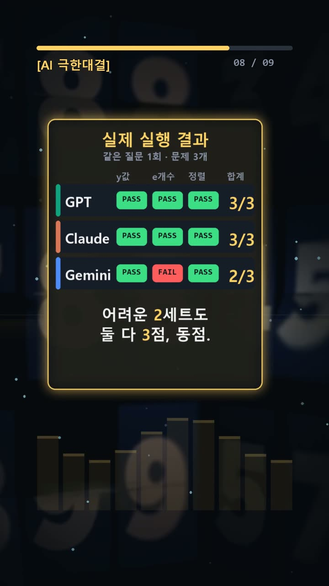
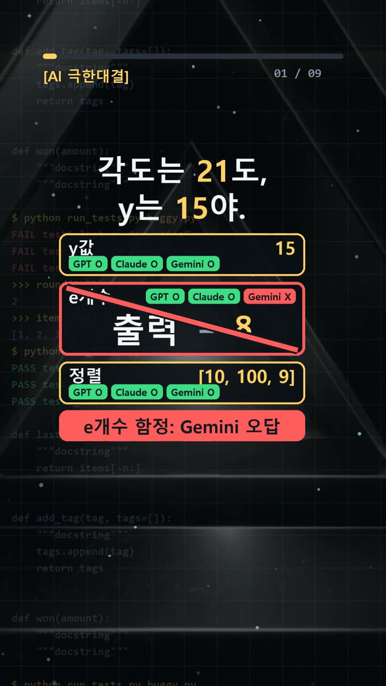
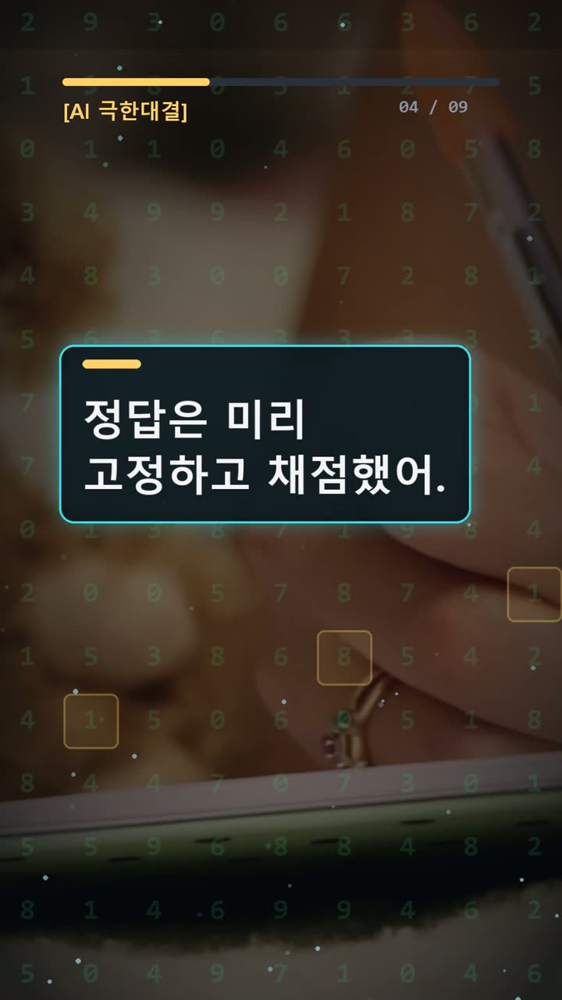
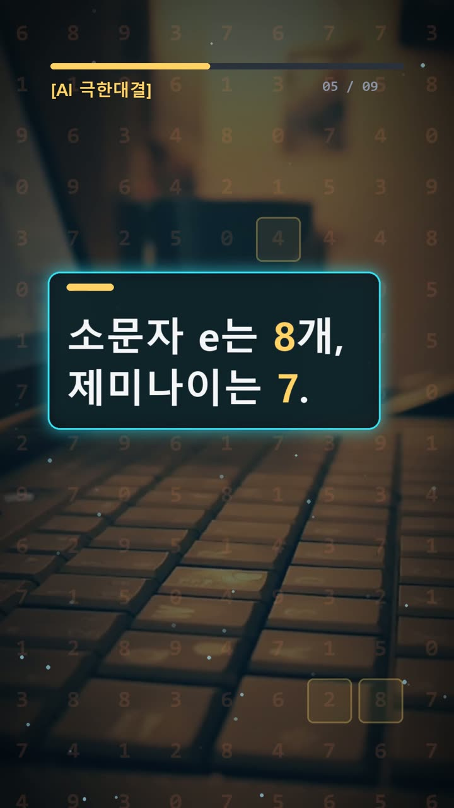

이 포스팅은 쿠팡 파트너스 및 토스쇼핑 쉐어링크 활동의 일환으로, 이에 따른 일정액의 수수료를 제공받습니다.
ai 비교 분석, y는 15인데 각도는 21도

검증 범위 · 실제 실험 기록 · 이 글의 실험 결과는 같은 질문 1회 시도 기준의 실제 기록이며, 전체 성능 순위가 아닙니다.
실험 프롬프트 원문·실제 답 보기 (무료 공개)서론
AI가 내놓은 숫자를 보고서나 코드에 옮길 때는 작은 차이도 확인해야 한다. 답이 짧고 또렷하면 검토를 건너뛰기 쉽다. 하지만 설명 없이 적힌 숫자 하나만으로는 문제의 조건을 제대로 읽었는지 알 수 없다. 직장인과 개발자에게 필요한 것은 답을 빨리 받는 일에 더해, 그 답을 확인할 기준을 마련하는 일이다.
2026년 10월 21일 실험에서는 GPT와 Claude가 세 문제를 모두 맞혔다. Gemini는 소문자 e의 개수를 틀려 두 문제를 맞혔다. 같은 질문을 모델별로 한 번씩 보냈으며 재시도는 없었다. 공동 선두를 가리기 위한 추가 세트에서는 세 모델 모두 정답을 냈다. 최종적으로 GPT·Claude의 공동 선두가 유지됐고 단독 승자는 없었다.

실험 설계
문제는 맞꼭지각을 이용한 식 계산, 소문자 e 개수 세기, 파이썬 정렬 결과 예측으로 구성했다. 셋을 함께 놓으면 계산뿐 아니라 무엇을 답해야 하는지, 어떤 기준으로 비교해야 하는지도 살펴볼 수 있다.
첫 문제는 크기가 같은 두 각을 (3y-24)°와 (y+6)°로 제시했다. 요구한 답은 각도가 아니라 y였다. 두 번째 문제는 nevertheless excellence에서 소문자 e만 세도록 했다. 세 번째는 print(sorted([10, 9, 100], key=str))의 출력 한 줄을 요구했다. 모든 문제에서 설명은 빼도록 했다.
채점 정답은 차례로 15, 8, [10, 100, 9]다. 정답을 먼저 정하는 이유는 그럴듯한 답에 맞춰 채점 기준이 흔들리는 일을 막기 위해서다. 설명의 길이나 말투 대신, 요청한 값과 실제 출력이 맞는지 확인할 수 있다.
사용 모델은 GPT-6.1 Sol High의 Work 모드, Claude Opus 5.5 중간의 시크릿 환경, Gemini 4 Argon의 임시 채팅이었다. 첫 세트의 GPT·Claude 동점에 따라 사전에 고정한 더 어려운 두 번째 세트를 새 대화에서 모델별 한 번씩 추가했다. 이는 같은 문제의 답을 다시 고치게 한 재시도와 구분된다.

결과
첫 세트의 실제 답과 채점은 다음과 같다. Gemini 답에 있던 빈 줄은 제외하고 문제별 값을 옮겼다.
| 모델 | 1번: y | 2번: e 개수 | 3번: 출력 | 점수 | |---|---|---|---|---| | GPT | 15 | 8 | [10, 100, 9] | 3/3 | | Claude | 15 | 8 | [10, 100, 9] | 3/3 | | Gemini | 15 | 7 | [10, 100, 9] | 2/3 |
GPT와 Claude는 세 답이 모두 정답과 일치했다. Gemini도 y와 파이썬 출력은 맞혔지만, e 개수를 정답보다 하나 적은 7로 답했다. 첫 세트의 차이는 글자 세기 한 문제에서 났다.
사전에 더 어렵게 고정한 두 번째 세트는 세 모델 모두 3/3이었다. 다만 이 세트의 문제 원문·정답·개별 답변은 기록에 없어 독자가 재현하거나 난이도를 확인할 수는 없다. 따라서 추가 실험으로 단독 선두를 정하지 못했다. 첫 세트의 오답을 지우거나, 반대로 그 한 번의 오답을 모델 전체의 성능으로 확대해서 해석해서는 안 된다. 제공된 두 번째 세트 기록에는 전체 채점 결과만 있으므로 세부 답변을 덧붙일 수도 없다.

왜 이런 결과가 나왔나
첫 문제의 함정은 계산한 값의 이름이다. 맞꼭지각은 크기가 같으므로 3y-24=y+6으로 놓는다. 양쪽에서 y를 빼고 24를 더하면 2y=30, 따라서 y는 15다. 이를 원래 식에 넣으면 각도는 21도가 된다. 21도는 계산에 등장하는 올바른 값이지만, 이번에 요구한 답은 아니다. 세 모델은 모두 이 구분을 지켰다.
두 번째 문제는 단어를 익숙하게 읽는 일과 글자를 하나씩 세는 일이 다르다는 점을 드러낸다. nevertheless에는 e가 4개, excellence에도 4개 있다. 합계는 8이다. 단어별로 나눠 표시하면 Gemini가 낸 7이 어디서 정답과 달라지는지 확인하기 쉽다.
Gemini는 사후 설명에서 단어를 토큰 단위로 처리하며 어림잡는 과정에서 e 하나를 놓쳤다고 밝혔다. 다만 이는 모델이 제시한 자기 설명이다. 이번 기록만으로 내부에서 실제로 어떤 계산이 일어났는지 확인할 수는 없다. 관찰한 사실은 최초 답이 7이었고, 정답은 8이라는 점이다.
세 번째 문제에서는 key=str이 비교 기준을 바꾼다. 원소를 숫자 크기로 비교하는 대신 문자열 "10", "9", "100"을 기준으로 정렬한다. "10"은 "100"의 앞부분과 같고 더 짧아 먼저 온다. "9"는 첫 글자부터 "1"보다 뒤에 놓인다. 따라서 결과는 [10, 100, 9]다. 정렬 기준만 문자열이며, 결과 목록의 원소는 원래 숫자로 남는다.
🧰 오늘의 실험실 생존 세트 — 밤새 실험 돌릴 때 쟁여 두는 것들


결론
이번 비교에서 확인한 결과는 GPT·Claude 공동 선두와 단독 승자 없음이다. 실무에서는 모델 이름을 고르는 것과 함께 답을 점검하는 절차도 정해 두는 편이 좋다.
- 계산 전, 요구한 값이 변수인지 각도인지 적는다.
- 글자 개수는 단어별로 나눠 세고 합계를 확인한다.
- 코드에서는
key처럼 결과를 바꾸는 조건을 먼저 찾는다. - 출력 예측은 실제 실행 결과와 대조한다.
- 오답 설명과 최초 답을 구분해 기록한다.
각 세트는 모델별 1회 시도이며, 첫 세트는 문제 3개에 한정된다. 추가 세트까지 모두 맞혔다는 사실도 다른 업무나 반복 실행의 성능을 대신하지는 않는다.
이 글은 실제 실험 기록을 바탕으로 AI 도구와 함께 정리했다. 혹시 글에서 틀린 부분이나 고쳐야 할 부분이 보이면 유튜브·스레드 댓글로 알려 주시면 정말 감사하겠습니다. 바로 확인해서 고칠게요!
실험 원문과 실제 답
아래 질문을 세 AI에 똑같이 1번씩 보냈어요.
아래 3문제에 번호별로 짧게 답해라. 1. 두 직선이 한 점에서 교차한다. 서로 맞꼭지각인 두 각의 크기가 (3y-24)°와 (y+6)°로 같다. y의 값은 얼마인가? 각의 크기를 답하지 말고 y만 정수 하나로 적어라. 설명은 적지 마라. 2. 아래 문장에 소문자 e는 모두 몇 개인가? 대문자와 소문자를 구분하고, 공백과 다른 글자는 세지 마라. 숫자만 적어라. 설명은 적지 마라. nevertheless excellence 3. 파이썬 3에서 아래 코드를 실행했을 때 표준 출력 한 줄을 그대로 적어라. 설명은 적지 마라. print(sorted([10, 9, 100], key=str))
정답(실험 전에 먼저 정함): 15 / 8 / [10, 100, 9]
| AI | 실제 답 |
|---|---|
| GPT | 15 8 [10, 100, 9] |
| Claude | 15 8 [10, 100, 9] |
| Gemini | 15 7 [10, 100, 9] |
🛒 다시 보기: 오늘의 생존 세트
🎙️ AI 음성이 궁금하다면
우리 채널 내레이션은 타입캐스트를 쓰지만, 영어·다국어 AI 음성을 실험해 보고 싶다면 ElevenLabs도 많이 쓰여요.
[광고·제휴] ElevenLabs 둘러보기🎬 쇼츠로 다시 보기 · 🧵 함께 이야기하기
🧵 스레드 @alligatorxor에서 오늘 실험 이야기 나누기 · ▶ 유튜브 새AI실험노트 다른 쇼츠 보기 · 📒 실험노트 홈